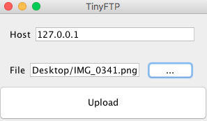

Software Engineer
Hello, there! I am a Software Engineer working in the Syracuse, NY area. I started off as a Java developer working on desktop GUIs. Now I'm at Gryphon Sensors working on anything from writing C++ business logic to full stack web app development. I enjoy the fast paced work environment at Gryphon, and have really broadened my skill set. In my spare time I like to build iOS mobile apps. In the future I plan to lead a team of software engineers.


Learn More About Me

Skills
- Work experience with programming languages such as Java, C/C++, Python, JavaScript, and Ruby
- Familiarity with frameworks like Rails, React, and JUnit
- Not too shabby with Linux tools and concepts
Style
I am a strong believer in the DRY principle of software development. I prefer explicit typing over inference when it improves readability. I like comments. I like eclipse with the vim plugin.
Activity
- Dean's list Spring 2014, Fall 2014, and Fall 2016
- Member of the Computer Science Association and IEEE at SUNY Oswego
Some of the Subjects I Studied
Computer Networking
 This course was the most useful because the material is so practical. We worked our way from how data is sent over the wire, all the way to distributed systems! We learned about how packets are routed, why we need IPv6, error detection wth CRC codes, ethernet LANs, how BGP allows internetwork scalability, and numerous protocols like IP, ARP, and DHCP. We discussed TCP in depth, along with improvements like "Slow Start" and congestion control. We also wrote our own Sliding Windows application using UDP datagrams as a programming exercise (TinyFTP seen to the left). We were also introduced to the Raft consensus algorithm as an alternative to Paxos, and where it fits in the CAP theorem.
Data Structures & Algorithms
This was my first experience with low level programming. We started with an introduction to bit manipulation by studying the BitSet data structure, which prepared us for examining hash functions. From there we looked at balanced trees like Red Black trees and the BTree, which we created from scatch as a project. Lastly, we looked at graphs and graph algorithms like Dijkstra's spanning tree.
Parallel Computing
This was a very challenging course, we started off with lock construction and worked our way to cluster computing. We discussed Compare and Set, Semaphores, race conditions, liveness and starvation, memory models, work stealing with fork/join, and benchmarking to analyze performance. As a final project I found peg solitaire move suggestions by trying every possible move.
System Programming
This course studied computer architecture but with a focus on software and operating systems. We first looked at the binary representation of IEEE Standard for floating point arithmitic. Secondly, we looked at reading assembly code generated by the C compiler, and used gdb to solve a series of puzzles known as the infamous bomb lab. After that nightmare, I completed the Cache Lab that simulated hits and misses from a cache line. One of the more useful thing I learned, however, was how to use a bit mask to extract the bits of interest. Lastly, we looked at system processes and wrote a tiny shell, learning about signal interrupts, PIDs, background tasks, forking/reaping, and memory management.
Other Noteworthy Projects
Airborne-CPS
X-Plane plugin to provide a Traffic Collision Avoidance System (TCAS) simulation written in C++. The plugin displays intruding aircraft on a graphical radar gauge, calculates a point of collision, and provides vertical speed recommendations.
TRAID
A management system for tracking products/customers for the NYS Technology Assistance Program (TRAID). Data is stored using SQLite and a relational database schema. The system is written in Ruby using the Rails framework.
MiniJava
A compiler for a smaller version of Java as specified by the Mini Java Grammar, using Antlr4 for AST construction and Jasmin for code generation. Built in optionals for all data types were added as a language extension.